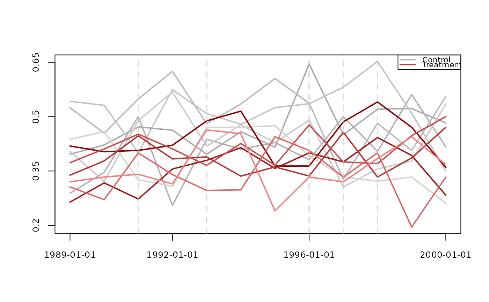
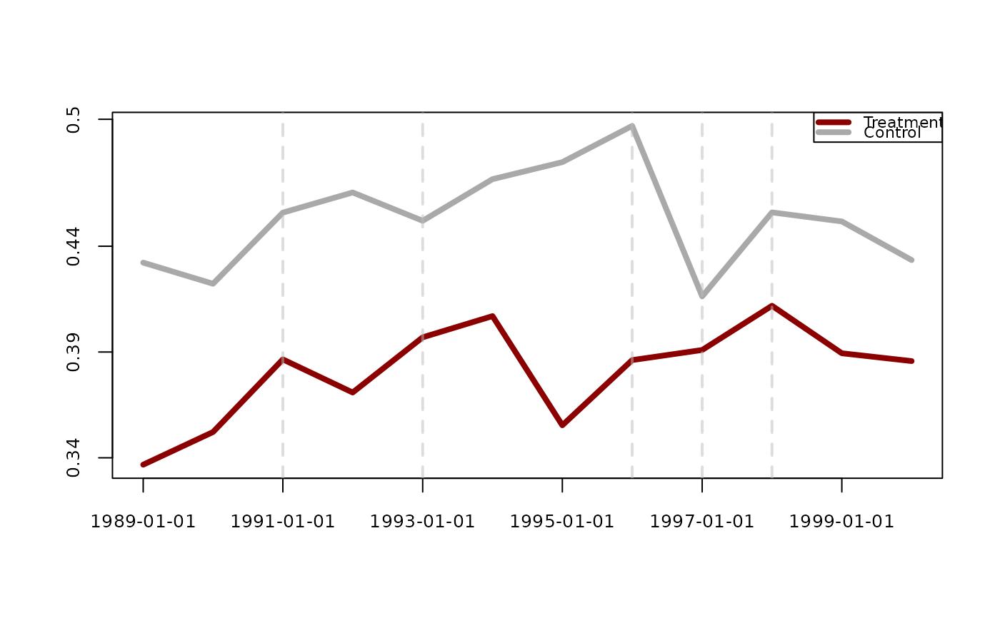

The plot_parallel_trends() function combines the various
trends data CSV files and plots parallel trends figures.
All treatment and all control groups can be combined so that there
is one control line and one treatment line by setting combine = TRUE.
Usage
plot_parallel_trends(
dir_path,
covariates = FALSE,
save_csv = FALSE,
combine = FALSE,
pch = NA,
pch_control = NA,
pch_treated = NA,
control_colour = c("darkgrey", "lightgrey"),
control_color = NULL,
treatment_colour = c("darkred", "lightcoral"),
treatment_color = NULL,
lwd = 2,
xlab = NA,
ylab = NA,
title = NA,
xticks = 4,
date_format = "%Y-%m-%d",
xdates = NULL,
xaxlabsz = 0.8,
save_png = FALSE,
width = 800,
height = 600,
ylim = NULL,
yaxlabsz = 0.8,
ylabels = NULL,
yticks = 4,
ydecimal = 2,
legend_location = "topright",
simplify_legend = TRUE,
legend_cex = 0.7,
legend_on = TRUE,
treatment_indicator_col = "grey",
treatment_indicator_alpha = 0.5,
treatment_indicator_lwd = 2,
treatment_indicator_lty = 2,
interpolate = FALSE,
filepath = tempdir(),
filenamecsv = "combined_trends_data.csv",
filenamepng = "undid_plot.png"
)Arguments
- dir_path
A character filepath to the folder containing all of the trends data CSV files.
- covariates
A logical value (defaults to
FALSE) indicating whether or not to consider covariates, i.e. whether or not to use themean_outcomecolumn or themean_outcome_residualizedcolumn from the trends data CSV files.- save_csv
A logical value (defaults to
FALSE) indicating whether or not to save thecombined_trends_data.csv.- combine
A logical value (defaults to
FALSE) indicating whether to plot each silo separately or to combine silos based on treatment status.- pch
An integer (0 to 25) or vector of integers (from 0 to 25) which determine the style of points used on the plot. Setting to
NA(default) will omit points from the plot.- pch_control
An integer (from 0 to 25) or vector of integers (from 0 to 25) which determine the style of points used on the plot for control silos. Takes value of pch if set to
NULL(default).- pch_treated
An integer (from 0 to 25) or vector of integers (from 0 to 25) which determine the style of points used on the plot for treated silos. Takes value of pch if set to
NULL(default).- control_colour
A character vector of colours (defaults to
c("darkgrey", "lightgrey")) for the control silo lines. Ifcombine = TRUE, takes the 1st value to determine the colour of the control line.- control_color
Overrides
control_colourif used. Defaults toNULL.- treatment_colour
A character vector of colours (defaults to
c("darkred", "lightcoral")) for the treatment silos. If combine = TRUE, takes the 1st value to determine the colour of the control line.- treatment_color
Overrides
control_colourif used. Defaults toNULL.- lwd
An integer (defaults to
2) for selecting the line widths.- xlab
A character value for the x-axis label (defaults to
NA).- ylab
A character value for the y-axis label (defaults to
NA).- title
A character value for the title of the plot (defaults to
NA).- xticks
An integer value denoting how many ticks to display on the x-axis (defaults to
4).- date_format
A string value denoting the format with which to display the dates along the x-axis (defaults to
"%Y"). Uses standard R date formatting styles.- xdates
Takes in a vector of date objects to be used as the dates shown along the x-axis (defaults to
NULL).- xaxlabsz
A double indicating the x-axis label sizes in comparison to a standardized default size (defaults to
0.8).- save_png
A logical value indicating whether or not to save the plot as a PNG file (defaults to
FALSE).- width
An integer denoting the width of the saved PNG file.
- height
An integer denoting the height of the saved PNG file.
- ylim
A vector of two doubles defining the min and max range of the values on the y-axis. Defaults to the min and max values of the values to be plotted.
- yaxlabsz
A double for specifying the y-axis label sizes (defaults to
0.8) in comparison to a standardized default size.- ylabels
A vector of values that you would like to appear on the y-axis (defaults to
NULL).- yticks
An integer denoting how many values to display along the y-axis (defaults to
4).- ydecimal
An integer value denoting to which decimal point the values along the y-axis are rounded to.
- legend_location
A character value for determining the location of the legend (defaults to
"topright"). Options are:"topright","topleft","bottomright","bottomleft","top","bottom","left","right","center".- simplify_legend
A logical value which if set to
TRUEshows one colour for the treatment silos in the legend and one colour for the control silos. Defaults toTRUE.- legend_cex
A double for adjusting the size of the text in the legend compared to a standard default size. Defaults to
0.7.- legend_on
A logical value for turning the legend on or off (defaults to
TRUE).- treatment_indicator_col
A character value for determining the colour of the dashed vertical lines showing when treatment times were (defaults to
"grey").- treatment_indicator_alpha
A double for for determining the transparency level of the dashed vertical lines showing the treatment times (defaults to
0.5).- treatment_indicator_lwd
A double for selecting the line width of the treatment indicator lines (defaults to
2).- treatment_indicator_lty
An integer for the selecting the lty option, i.e. the line style, for the treatment_indicator lines (defaults to
2).- interpolate
A logical value (either
TRUEorFALSE) which determines if interpolation should be used to fill missing trends data. Defaults toFALSE. Uses a piecewise linear function.- filepath
Filepath to save the CSV file. Defaults to
tempdir().- filenamecsv
A string filename for the combined trends data Defaults to
"combined_trends_data.csv".- filenamepng
A string filename for the PNG file output. Defaults to
"undid_plot.png".
Value
A data frame built from the trends data from all CSV
files in the specified directory. If combine = FALSE, the
data frame includes all silos joined by row. If combine = TRUE,
the data frame merges treated silos into a single treatment group
and control silos into a single control group.
Examples
# Get path to example data included with package
dir_path <- system.file("extdata/staggered", package = "undidR")
# Basic usage with default parameters
plot_parallel_trends(dir_path)

#> silo_name treatment_time time mean_outcome mean_outcome_residualized
#> 1 23 control 1989-01-01 0.3963415 0.22363573
#> 2 23 control 1990-01-01 0.4218750 0.21196093
#> 3 23 control 1991-01-01 0.4718310 0.24358881
#> 4 23 control 1992-01-01 0.4625850 0.25493875
#> 5 23 control 1993-01-01 0.3962264 0.18050348
#> 6 23 control 1994-01-01 0.4583333 0.18559148
#> 7 23 control 1995-01-01 0.4160584 0.15908115
#> 8 23 control 1996-01-01 0.6451613 0.29206153
#> 9 23 control 1997-01-01 0.4500000 0.22710256
#> 10 23 control 1998-01-01 0.5208333 0.23104891
#> 11 23 control 1999-01-01 0.5223881 0.29855050
#> 12 23 control 2000-01-01 0.4827586 0.26297947
#> 13 32 control 1989-01-01 0.2884615 0.11538462
#> 14 32 control 1990-01-01 0.3461538 0.16951567
#> 15 32 control 1991-01-01 0.5000000 0.30000000
#> 16 32 control 1992-01-01 0.2545455 0.16117936
#> 17 32 control 1993-01-01 0.4375000 0.27530810
#> 18 32 control 1994-01-01 0.4102564 0.25998807
#> 19 32 control 1995-01-01 0.4285714 0.25714286
#> 20 32 control 1996-01-01 0.3809524 0.28571429
#> 21 32 control 1997-01-01 0.5000000 0.31578947
#> 22 32 control 1998-01-01 0.4038462 0.22070546
#> 23 32 control 1999-01-01 0.5609756 0.24304664
#> 24 32 control 2000-01-01 0.4166667 0.22222222
#> 25 46 control 1989-01-01 0.5245902 0.31535022
#> 26 46 control 1990-01-01 0.4545455 0.22457002
#> 27 46 control 1991-01-01 0.5490196 0.26681327
#> 28 46 control 1992-01-01 0.6250000 0.24292453
#> 29 46 control 1993-01-01 0.4807692 0.35153846
#> 30 46 control 1994-01-01 0.5348837 0.24072910
#> 31 46 control 1995-01-01 0.6052632 0.28947368
#> 32 46 control 1996-01-01 0.5370370 0.28451178
#> 33 46 control 1997-01-01 0.3269231 0.15784216
#> 34 46 control 1998-01-01 0.4814815 0.24074074
#> 35 46 control 1999-01-01 0.4067797 0.18644068
#> 36 46 control 2000-01-01 0.5555556 0.32617080
#> 37 54 control 1989-01-01 0.5423729 0.25075129
#> 38 54 control 1990-01-01 0.5312500 0.24261935
#> 39 54 control 1991-01-01 0.4000000 0.11235431
#> 40 54 control 1992-01-01 0.5744681 0.26008804
#> 41 54 control 1993-01-01 0.5084746 0.26068274
#> 42 54 control 1994-01-01 0.4788732 0.24210126
#> 43 54 control 1995-01-01 0.5250000 0.25689655
#> 44 54 control 1996-01-01 0.5357143 0.22857143
#> 45 54 control 1997-01-01 0.5813953 0.18840153
#> 46 54 control 1998-01-01 0.6521739 0.25044296
#> 47 54 control 1999-01-01 0.5094340 0.22426753
#> 48 54 control 2000-01-01 0.3500000 0.10439560
#> 49 57 1998 1989-01-01 0.4189189 0.23557886
#> 50 57 1998 1990-01-01 0.4032258 0.13342876
#> 51 57 1998 1991-01-01 0.4067797 0.18005001
#> 52 57 1998 1992-01-01 0.4210526 0.20009483
#> 53 57 1998 1993-01-01 0.4883721 0.19071037
#> 54 57 1998 1994-01-01 0.5151515 0.27734297
#> 55 57 1998 1995-01-01 0.3636364 0.11594203
#> 56 57 1998 1996-01-01 0.3636364 0.13379558
#> 57 57 1998 1997-01-01 0.4857143 0.26902087
#> 58 57 1998 1998-01-01 0.5405405 0.32132132
#> 59 57 1998 1999-01-01 0.4705882 0.30470588
#> 60 57 1998 2000-01-01 0.3600000 0.26054054
#> 61 58 1993 1989-01-01 0.2641509 0.10798476
#> 62 58 1993 1990-01-01 0.3170732 0.08647450
#> 63 58 1993 1991-01-01 0.2727273 0.12967914
#> 64 58 1993 1992-01-01 0.3555556 0.23984674
#> 65 58 1993 1993-01-01 0.3793103 0.20616114
#> 66 58 1993 1994-01-01 0.4142857 0.21935484
#> 67 58 1993 1995-01-01 0.3571429 0.15916149
#> 68 58 1993 1996-01-01 0.4000000 0.21055239
#> 69 58 1993 1997-01-01 0.3750000 0.24207227
#> 70 58 1993 1998-01-01 0.4423077 0.18174217
#> 71 58 1993 1999-01-01 0.3928571 0.16208791
#> 72 58 1993 2000-01-01 0.2830189 0.10073621
#> 73 59 1997 1989-01-01 0.3383838 0.15383915
#> 74 59 1997 1990-01-01 0.3779070 0.18515738
#> 75 59 1997 1991-01-01 0.4470588 0.22839248
#> 76 59 1997 1992-01-01 0.3833333 0.18700466
#> 77 59 1997 1993-01-01 0.3888889 0.19535459
#> 78 59 1997 1994-01-01 0.3357664 0.16534434
#> 79 59 1997 1995-01-01 0.3611111 0.16275151
#> 80 59 1997 1996-01-01 0.3360656 0.16081248
#> 81 59 1997 1997-01-01 0.4566929 0.27460341
#> 82 59 1997 1998-01-01 0.3333333 0.17046819
#> 83 59 1997 1999-01-01 0.3860759 0.17057084
#> 84 59 1997 2000-01-01 0.4705882 0.28313640
#> 85 64 1996 1989-01-01 0.3728814 0.15942029
#> 86 64 1996 1990-01-01 0.4107143 0.20846350
#> 87 64 1996 1991-01-01 0.4516129 0.22695853
#> 88 64 1996 1992-01-01 0.4109589 0.14080664
#> 89 64 1996 1993-01-01 0.3653846 0.15087765
#> 90 64 1996 1994-01-01 0.4259259 0.19788742
#> 91 64 1996 1995-01-01 0.3658537 0.11168164
#> 92 64 1996 1996-01-01 0.4772727 0.07803468
#> 93 64 1996 1997-01-01 0.3750000 0.20540541
#> 94 64 1996 1998-01-01 0.3703704 0.25536062
#> 95 64 1996 1999-01-01 0.4473684 0.17061565
#> 96 64 1996 2000-01-01 0.5000000 0.18923611
#> 97 71 1991 1989-01-01 0.3061224 0.19987995
#> 98 71 1991 1990-01-01 0.2708333 0.15020396
#> 99 71 1991 1991-01-01 0.4000000 0.19491094
#> 100 71 1991 1992-01-01 0.3400000 0.18766355
#> 101 71 1991 1993-01-01 0.2962963 0.17509426
#> 102 71 1991 1994-01-01 0.2978723 0.11954249
#> 103 71 1991 1995-01-01 0.4444444 0.25381264
#> 104 71 1991 1996-01-01 0.4067797 0.24277701
#> 105 71 1991 1997-01-01 0.3333333 0.19940476
#> 106 71 1991 1998-01-01 0.4000000 0.21091493
#> 107 71 1991 1999-01-01 0.1951220 0.07125527
#> 108 71 1991 2000-01-01 0.3333333 0.10158730
#> 109 73 control 1989-01-01 0.4042553 0.26086957
#> 110 73 control 1990-01-01 0.3214286 0.21736896
#> 111 73 control 1991-01-01 0.4888889 0.21013645
#> 112 73 control 1992-01-01 0.5681818 0.26573427
#> 113 73 control 1993-01-01 0.4186047 0.22238372
#> 114 73 control 1994-01-01 0.4772727 0.26253918
#> 115 73 control 1995-01-01 0.4285714 0.17658730
#> 116 73 control 1996-01-01 0.4901961 0.25664919
#> 117 73 control 1997-01-01 0.3061224 0.14043584
#> 118 73 control 1998-01-01 0.3555556 0.08925620
#> 119 73 control 1999-01-01 0.3773585 0.21966762
#> 120 73 control 2000-01-01 0.5348837 0.29608622
#> 121 85 1997 1989-01-01 0.3200000 0.18000000
#> 122 85 1997 1990-01-01 0.3333333 0.14814815
#> 123 85 1997 1991-01-01 0.3409091 0.15909091
#> 124 85 1997 1992-01-01 0.3142857 0.11428571
#> 125 85 1997 1993-01-01 0.4634146 0.21951220
#> 126 85 1997 1994-01-01 0.4528302 0.28301887
#> 127 85 1997 1995-01-01 0.2400000 0.18000000
#> 128 85 1997 1996-01-01 0.3333333 0.19607843
#> 129 85 1997 1997-01-01 0.3200000 0.14000000
#> 130 85 1997 1998-01-01 0.3846154 0.23076923
#> 131 85 1997 1999-01-01 0.4444444 0.28888889
#> 132 85 1997 2000-01-01 0.3673469 0.14656772
#> 133 86 control 1989-01-01 0.4375000 0.28083333
#> 134 86 control 1990-01-01 0.4583333 0.27083333
#> 135 86 control 1991-01-01 0.3255814 0.16279070
#> 136 86 control 1992-01-01 0.3076923 0.19230769
#> 137 86 control 1993-01-01 0.4705882 0.26470588
#> 138 86 control 1994-01-01 0.4705882 0.17647059
#> 139 86 control 1995-01-01 0.4750000 0.11621622
#> 140 86 control 1996-01-01 0.3921569 0.19181586
#> 141 86 control 1997-01-01 0.3333333 0.14428929
#> 142 86 control 1998-01-01 0.3220339 0.17165525
#> 143 86 control 1999-01-01 0.3333333 0.15454545
#> 144 86 control 2000-01-01 0.2608696 0.14967926
#> covariates date_format freq y
#> 1 asian;black;male yyyy 1 year 0.3963415
#> 2 asian;black;male yyyy 1 year 0.4218750
#> 3 asian;black;male yyyy 1 year 0.4718310
#> 4 asian;black;male yyyy 1 year 0.4625850
#> 5 asian;black;male yyyy 1 year 0.3962264
#> 6 asian;black;male yyyy 1 year 0.4583333
#> 7 asian;black;male yyyy 1 year 0.4160584
#> 8 asian;black;male yyyy 1 year 0.6451613
#> 9 asian;black;male yyyy 1 year 0.4500000
#> 10 asian;black;male yyyy 1 year 0.5208333
#> 11 asian;black;male yyyy 1 year 0.5223881
#> 12 asian;black;male yyyy 1 year 0.4827586
#> 13 asian;black;male yyyy 1 year 0.2884615
#> 14 asian;black;male yyyy 1 year 0.3461538
#> 15 asian;black;male yyyy 1 year 0.5000000
#> 16 asian;black;male yyyy 1 year 0.2545455
#> 17 asian;black;male yyyy 1 year 0.4375000
#> 18 asian;black;male yyyy 1 year 0.4102564
#> 19 asian;black;male yyyy 1 year 0.4285714
#> 20 asian;black;male yyyy 1 year 0.3809524
#> 21 asian;black;male yyyy 1 year 0.5000000
#> 22 asian;black;male yyyy 1 year 0.4038462
#> 23 asian;black;male yyyy 1 year 0.5609756
#> 24 asian;black;male yyyy 1 year 0.4166667
#> 25 asian;black;male yyyy 1 year 0.5245902
#> 26 asian;black;male yyyy 1 year 0.4545455
#> 27 asian;black;male yyyy 1 year 0.5490196
#> 28 asian;black;male yyyy 1 year 0.6250000
#> 29 asian;black;male yyyy 1 year 0.4807692
#> 30 asian;black;male yyyy 1 year 0.5348837
#> 31 asian;black;male yyyy 1 year 0.6052632
#> 32 asian;black;male yyyy 1 year 0.5370370
#> 33 asian;black;male yyyy 1 year 0.3269231
#> 34 asian;black;male yyyy 1 year 0.4814815
#> 35 asian;black;male yyyy 1 year 0.4067797
#> 36 asian;black;male yyyy 1 year 0.5555556
#> 37 asian;black;male yyyy 1 year 0.5423729
#> 38 asian;black;male yyyy 1 year 0.5312500
#> 39 asian;black;male yyyy 1 year 0.4000000
#> 40 asian;black;male yyyy 1 year 0.5744681
#> 41 asian;black;male yyyy 1 year 0.5084746
#> 42 asian;black;male yyyy 1 year 0.4788732
#> 43 asian;black;male yyyy 1 year 0.5250000
#> 44 asian;black;male yyyy 1 year 0.5357143
#> 45 asian;black;male yyyy 1 year 0.5813953
#> 46 asian;black;male yyyy 1 year 0.6521739
#> 47 asian;black;male yyyy 1 year 0.5094340
#> 48 asian;black;male yyyy 1 year 0.3500000
#> 49 asian;black;male yyyy 1 year 0.4189189
#> 50 asian;black;male yyyy 1 year 0.4032258
#> 51 asian;black;male yyyy 1 year 0.4067797
#> 52 asian;black;male yyyy 1 year 0.4210526
#> 53 asian;black;male yyyy 1 year 0.4883721
#> 54 asian;black;male yyyy 1 year 0.5151515
#> 55 asian;black;male yyyy 1 year 0.3636364
#> 56 asian;black;male yyyy 1 year 0.3636364
#> 57 asian;black;male yyyy 1 year 0.4857143
#> 58 asian;black;male yyyy 1 year 0.5405405
#> 59 asian;black;male yyyy 1 year 0.4705882
#> 60 asian;black;male yyyy 1 year 0.3600000
#> 61 asian;black;male yyyy 1 year 0.2641509
#> 62 asian;black;male yyyy 1 year 0.3170732
#> 63 asian;black;male yyyy 1 year 0.2727273
#> 64 asian;black;male yyyy 1 year 0.3555556
#> 65 asian;black;male yyyy 1 year 0.3793103
#> 66 asian;black;male yyyy 1 year 0.4142857
#> 67 asian;black;male yyyy 1 year 0.3571429
#> 68 asian;black;male yyyy 1 year 0.4000000
#> 69 asian;black;male yyyy 1 year 0.3750000
#> 70 asian;black;male yyyy 1 year 0.4423077
#> 71 asian;black;male yyyy 1 year 0.3928571
#> 72 asian;black;male yyyy 1 year 0.2830189
#> 73 asian;black;male yyyy 1 year 0.3383838
#> 74 asian;black;male yyyy 1 year 0.3779070
#> 75 asian;black;male yyyy 1 year 0.4470588
#> 76 asian;black;male yyyy 1 year 0.3833333
#> 77 asian;black;male yyyy 1 year 0.3888889
#> 78 asian;black;male yyyy 1 year 0.3357664
#> 79 asian;black;male yyyy 1 year 0.3611111
#> 80 asian;black;male yyyy 1 year 0.3360656
#> 81 asian;black;male yyyy 1 year 0.4566929
#> 82 asian;black;male yyyy 1 year 0.3333333
#> 83 asian;black;male yyyy 1 year 0.3860759
#> 84 asian;black;male yyyy 1 year 0.4705882
#> 85 asian;black;male yyyy 1 year 0.3728814
#> 86 asian;black;male yyyy 1 year 0.4107143
#> 87 asian;black;male yyyy 1 year 0.4516129
#> 88 asian;black;male yyyy 1 year 0.4109589
#> 89 asian;black;male yyyy 1 year 0.3653846
#> 90 asian;black;male yyyy 1 year 0.4259259
#> 91 asian;black;male yyyy 1 year 0.3658537
#> 92 asian;black;male yyyy 1 year 0.4772727
#> 93 asian;black;male yyyy 1 year 0.3750000
#> 94 asian;black;male yyyy 1 year 0.3703704
#> 95 asian;black;male yyyy 1 year 0.4473684
#> 96 asian;black;male yyyy 1 year 0.5000000
#> 97 asian;black;male yyyy 1 year 0.3061224
#> 98 asian;black;male yyyy 1 year 0.2708333
#> 99 asian;black;male yyyy 1 year 0.4000000
#> 100 asian;black;male yyyy 1 year 0.3400000
#> 101 asian;black;male yyyy 1 year 0.2962963
#> 102 asian;black;male yyyy 1 year 0.2978723
#> 103 asian;black;male yyyy 1 year 0.4444444
#> 104 asian;black;male yyyy 1 year 0.4067797
#> 105 asian;black;male yyyy 1 year 0.3333333
#> 106 asian;black;male yyyy 1 year 0.4000000
#> 107 asian;black;male yyyy 1 year 0.1951220
#> 108 asian;black;male yyyy 1 year 0.3333333
#> 109 asian;black;male yyyy 1 year 0.4042553
#> 110 asian;black;male yyyy 1 year 0.3214286
#> 111 asian;black;male yyyy 1 year 0.4888889
#> 112 asian;black;male yyyy 1 year 0.5681818
#> 113 asian;black;male yyyy 1 year 0.4186047
#> 114 asian;black;male yyyy 1 year 0.4772727
#> 115 asian;black;male yyyy 1 year 0.4285714
#> 116 asian;black;male yyyy 1 year 0.4901961
#> 117 asian;black;male yyyy 1 year 0.3061224
#> 118 asian;black;male yyyy 1 year 0.3555556
#> 119 asian;black;male yyyy 1 year 0.3773585
#> 120 asian;black;male yyyy 1 year 0.5348837
#> 121 asian;black;male yyyy 1 year 0.3200000
#> 122 asian;black;male yyyy 1 year 0.3333333
#> 123 asian;black;male yyyy 1 year 0.3409091
#> 124 asian;black;male yyyy 1 year 0.3142857
#> 125 asian;black;male yyyy 1 year 0.4634146
#> 126 asian;black;male yyyy 1 year 0.4528302
#> 127 asian;black;male yyyy 1 year 0.2400000
#> 128 asian;black;male yyyy 1 year 0.3333333
#> 129 asian;black;male yyyy 1 year 0.3200000
#> 130 asian;black;male yyyy 1 year 0.3846154
#> 131 asian;black;male yyyy 1 year 0.4444444
#> 132 asian;black;male yyyy 1 year 0.3673469
#> 133 asian;black;male yyyy 1 year 0.4375000
#> 134 asian;black;male yyyy 1 year 0.4583333
#> 135 asian;black;male yyyy 1 year 0.3255814
#> 136 asian;black;male yyyy 1 year 0.3076923
#> 137 asian;black;male yyyy 1 year 0.4705882
#> 138 asian;black;male yyyy 1 year 0.4705882
#> 139 asian;black;male yyyy 1 year 0.4750000
#> 140 asian;black;male yyyy 1 year 0.3921569
#> 141 asian;black;male yyyy 1 year 0.3333333
#> 142 asian;black;male yyyy 1 year 0.3220339
#> 143 asian;black;male yyyy 1 year 0.3333333
#> 144 asian;black;male yyyy 1 year 0.2608696
# Custom plot with modified parameters
plot_parallel_trends(dir_path, combine = TRUE, lwd = 4,
xdates = as.Date(c("1989-01-01", "1991-01-01",
"1993-01-01", "1995-01-01",
"1997-01-01", "1999-01-01")))

#> time silo_name y treatment_time date_format
#> 1 1989-01-01 Treatment 0.3367429 <NA> yyyy
#> 2 1989-01-01 Control 0.4322536 <NA> yyyy
#> 3 1990-01-01 Treatment 0.3521812 <NA> yyyy
#> 4 1990-01-01 Control 0.4222644 <NA> yyyy
#> 5 1991-01-01 Treatment 0.3865146 1991 yyyy
#> 6 1991-01-01 Control 0.4558868 1991 yyyy
#> 7 1992-01-01 Treatment 0.3708644 <NA> yyyy
#> 8 1992-01-01 Control 0.4654121 <NA> yyyy
#> 9 1993-01-01 Treatment 0.3969445 1993 yyyy
#> 10 1993-01-01 Control 0.4520272 1993 yyyy
#> 11 1994-01-01 Treatment 0.4069720 <NA> yyyy
#> 12 1994-01-01 Control 0.4717013 <NA> yyyy
#> 13 1995-01-01 Treatment 0.3553647 <NA> yyyy
#> 14 1995-01-01 Control 0.4797441 <NA> yyyy
#> 15 1996-01-01 Treatment 0.3861813 1996 yyyy
#> 16 1996-01-01 Control 0.4968697 1996 yyyy
#> 17 1997-01-01 Treatment 0.3909568 1997 yyyy
#> 18 1997-01-01 Control 0.4162957 1997 yyyy
#> 19 1998-01-01 Treatment 0.4118612 1998 yyyy
#> 20 1998-01-01 Control 0.4559874 1998 yyyy
#> 21 1999-01-01 Treatment 0.3894094 <NA> yyyy
#> 22 1999-01-01 Control 0.4517115 <NA> yyyy
#> 23 2000-01-01 Treatment 0.3857146 <NA> yyyy
#> 24 2000-01-01 Control 0.4334557 <NA> yyyy